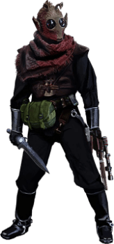

Rodian

Tratti dei Rodian
| Aumento dei punteggi caratteristica | Il punteggio di Destrezza aumenta di 2 e la Costituzione aumenta di 1 |
| Eta' | I rodian raggiungono la maturita' intorno ai 18 anni e vivono per meno di un secolo |
| Allineamento | Tendente al lato oscuro della forza |
| Taglia | Media |
| Velocita' | 9m |
| Scalatore Provetto | Velocita' di scalare 9m |
| Scurovisione | Vedi 18m attraverso luce fioca come se fosse luce intensa e nell'oscurita' come se fosse luce fioca. Nell'oscurita' non vedi i colori, solo gradazioni di grigio |
| Olfatto Acuto ed Udito Sopraffino | Hai vantaggio nelle prove di Saggezza (Percezione) che riguardano l'olfatto o l'udito |
| Cacciatore Imperscrutabile | Sei competente nelle abilita' di Sopravvivenza e Furtivita' |
| Linguaggi | Sai parlare, leggere e scrivere: Galattico Base e Rodese. I rodian sono in grado di comunicare tra di loro utilizzando dei feromoni. I sensitivi della forza sono in grado di individuare queste comunicazioni ma non sono in grado di comprenderne il contenuto |